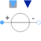

VariableVoltageSourceVariable multiphase AC voltage |

|
Information
This information is part of the Modelica Standard Library maintained by the Modelica Association.
This model describes m variable voltage sources, with m complex signal inputs, specifying the complex voltages by the complex RMS voltage components. Additionally, the frequency of the voltage source is defined by a real signal input. m single phase VariableVoltageSources are used.
See also
SinglePhase.VoltageSource, VoltageSource, CurrentSource, VariableCurrentSource
Connectors (4)
| plug_p |
Type: PositivePlug Description: Positive quasi-static polyphase plug |
|
|---|---|---|
| plug_n |
Type: NegativePlug Description: Negative quasi-static polyphase plug |
|
| f |
Type: RealInput |
|
| V |
Type: ComplexInput[m] |
Components (2)
| v |
Type: ComplexVoltage[m] Description: Complex voltage |
|
|---|---|---|
| i |
Type: ComplexCurrent[m] Description: Complex current |
Used in Examples (1)
|
Modelica.Magnetic.QuasiStatic.FundamentalWave.Examples.BasicMachines.InductionMachines Induction machine with squirrel cage and inverter driving a conveyor |
Used in Components (1)
|
Modelica.Electrical.QuasiStationary.MultiPhase.Sources Voltage source with integrated frequency sweep |